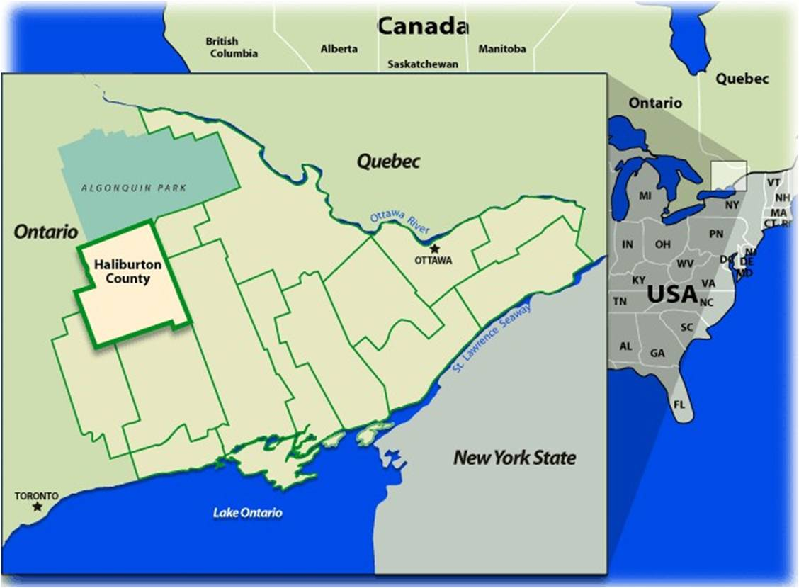
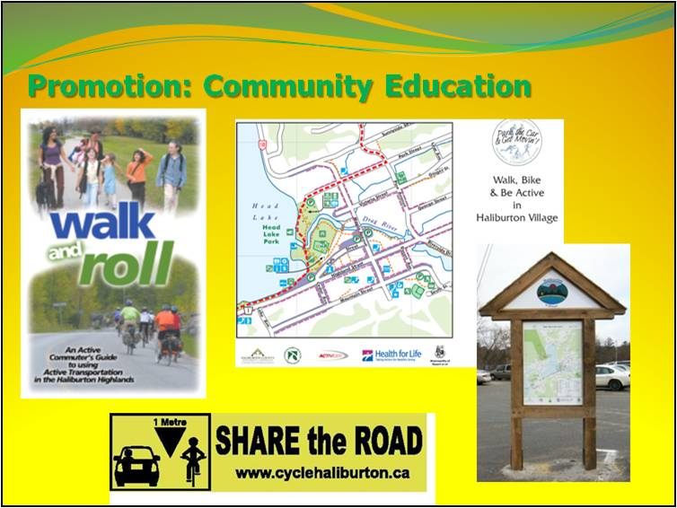
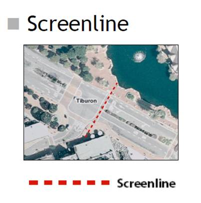
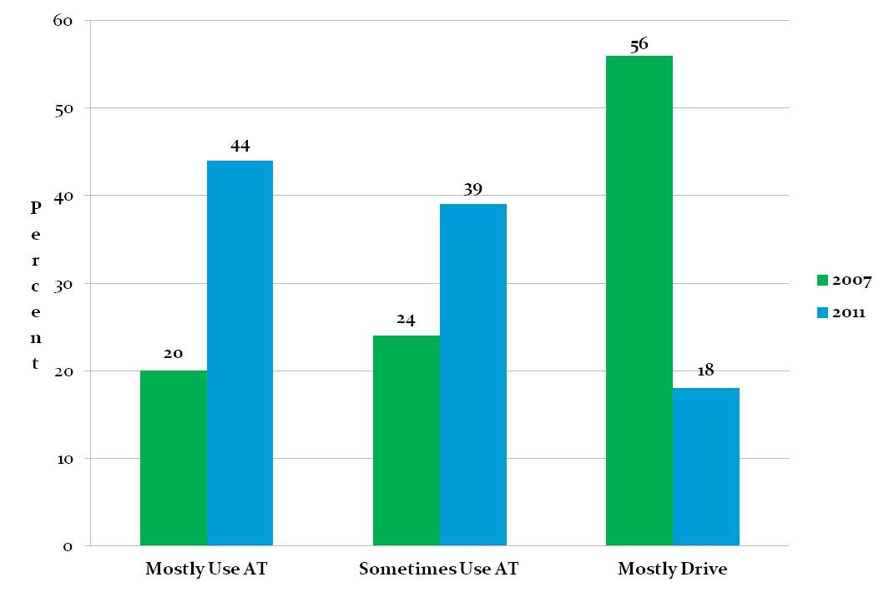

Tools Used
Initiated By
- Haliburton Communities in Action Committee
Partners
- Local municipalities
Results
- Over a seven-year period, active transportation (walking and cycling) has increased.
- Official plans at the county and local levels now include policies specific to active transportation.
- Infrastructure improvements include two $1M+ streetscaping projects, wider sidewalks, paved shoulders, and lower speed limits in certain areas.
- Active transportation plans were developed for the villages of Haliburton and Minden.
Case study PDF
Webinar Transcript
Walk and Roll Commuter's Guide
Landmark Case Study
Haliburton Communities in Action
This is a rare, well-documented model for promoting walking and cycling in a small or rural community.
Background
Haliburton County is a rural community of about 4500 square km with a population of about 17,000 (2011 Census), giving it a density of about four people per square kilometre. During summer, when seasonal residents and tourists arrive, however, the county's population can triple. Located 230 km north of Toronto, the county's two main villages, Haliburton and Minden, are the economic and social hubs for the area and are the focus of this program.
The Communities in Action Committee (CIA) is a coalition of community stakeholders including: HKPR District Health Unit, Halibuton County Development Corporation, Haliburton Highlands Cycling Coalition, Minden Riverwalk, and the Ontario Healthy Communities Coalition.

Note: To minimize site maintenance costs, all case studies on this site are written in the past tense, even if they are ongoing as is the case with this particular program.
Formed in 2004, Communities in Action (CIA) set a goal to create healthy, active communities in Haliburton County by planning for active transportation, primarily walking and cycling.
Sue Shikaze, Chair and Health Promoter of the HKPR District Health Unit said that the CIA wanted to "raise physical activity levels through active transportation. Making our communities better for active transportation encourages more physical activity and reduces injuries. It also intersects with our municipal priorities like economic development, particularly tourism."
Setting Objectives
The CIA's objective was to promote and plan for active transportation in Haliburton County in order to create a healthier community. By doing so, the CIA believed that a number of other municipal and community objectives could be attained, including increased equity and accessibility, economic development opportunities, as well as health and environmental benefits.
The target audiences and desired behaviours:
- Municipal staff and decision makers include active transportation needs in policy and infrastructure projects
- Municipal staff and decision makers engage with the CIA in order to improve the active transportation environment
- There is an increase in active transportation activity in the community
Getting Informed
When the program first started, active transportation was an unknown term in the community, so the focus was to raise awareness of the benefits and potential of active transportation to both the community at large and key municipal staff and decision makers.
To engage and better understand the municipal sector, the CIA met with staff and councilors, and included them in the development of planning documents they created. They also hosted workshops on walkability and transportation planning for staff and council members, providing them with the opportunity to share their perspectives on challenges and opportunities related to active transportation in the communities.
To understand community interests, the CIA conducted community-based research including surveys, observational studies, focus groups, community forums and interviews. Feedback from these sources provided the CIA with information about the area's current active transportation assets and the barriers that people faced.
The key barriers identified were:
- Limited municipal funding to make improvements
- Limited municipal knowledge and capacity to plan for active transportation
- “Car culture.” There was a general perception that roads were for cars, and that one needed to drive to get everywhere
- Distance and geography. Most people lived more than 10 km from key destinations (work, school, shopping); hilly geography also made it challenging to get places using active transportation.
The information collected helped to inform the CIA's planning documents. "It's important to note that these plans were developed by community partners rather than commissioned by county or municipal government, which is more typical."
Delivering the Program
Given Haliburton County's large geography, the CIA focused a multi-pronged planning and promotion effort on the two hubs: the villages of Haliburton and Minden.
To address the key barriers identified during the research phase, the CIA took a practical approach.
They:
- Worked to raise the awareness of municipal councils, by providing them with a range of information (presentations, newsletters, meetings, workshops, etc.).
- Positioned themselves as credible resources to municipalities, securing third-party funding to develop active transportation and cycling master plans.
- Conducted on-going signage and media campaigns to raise community awareness of walking and cycling as viable means of transportation. Campaigns included Share the Road, the Commuter Challenge, Walk to School Day/Week, and Bike to School Week. Its Park the Car and Get Moving campaign encouraged those who had driven to town to walk from place to place once they got there. (Prompts, Vivid, Credible Communications, Overcoming Specific Barriers, Building Motivation over Time)

- Developed the Walk and Roll Commuter's Guide, a rural-specific resource to encourage active transportation. (Vivid, Credible Communications, Overcoming Specific Barriers)
Phase 1 Haliburton (2005 – 2007)
Phase I included a community survey of active transportation habits, focus groups to identify problem areas and assets, observation counts of active transportation activity, an inventory of amenities, illustrations by a Landscape Architect for improving problem spots, and developing an active transportation plan for Haliburton Village.
Phase 2 Minden (2007 – 2011)
Phase 2 included a community survey, focus groups, community forum, observation counts, inventory, photo-shopped pictures of improvements for problem spots, working with elementary school students, and developing an active transportation plan for Minden Village.
It also included an awareness raising campaign with decision makers, providing input on local official plan amendments, partnering on a Share the Road campaign, and developing and implementing a community awareness strategy.

In the spring and summer of 2012, the CIA also conducted active transportation research and planning in a third community (Dorset), in partnership with the Algonquin Community Development Co-Operative. Research included observation counts, a survey and community forums to obtain input on the assets and barriers specific to Dorset.
Even after these initial phases, Kate Hall, the CIA's Project Coordinator, said that the CIA has continued to advocate for active transportation. "We update councils through delegations, hosting workshops and events, participating in the Official Plan reviews, and coordinating letter writing campaigns," she said.
Financing the Program
The program was mostly funded through grants. With infrastructure improvements like streetscapes, it was the municipalities who took the lead because they were the ones that received the stimulus funding for those projects (a third, a third, a third - municipal, provincial, and federal money). Each of the streetscape projects cost between 1 million and 1.7 million dollars for about 400 meters of streetscape.
In Minden, trail work was funded by Ontario’s Trillium Foundation, the Federal Government’s Federal Recreation Infrastructure Program and the township. In addition, a community group was able to access economic development funding to get things off the ground.
Measuring Achievements
Phase 3 of the program included a comprehensive evaluation of the CIA's work to date. In 2011, the CIA obtained funding from the Ontario Ministry of Health Promotion and Sport (now Ministry of Health and Long Term Care) to complete this phase. It included:
- A comprehensive inventory of observed changes with respect to policy and infrastructure
- A community on-line survey that asked about active transportation behaviour (self-reported)
- Interviews with key municipal staff and councillors regarding the impact of the CIA on municipal activities with respect to active transportation
- Interviews with users of a specific piece of active transportation infrastructure (Minden Riverwalk)
- Observation counts of walking and cycling in Haliburton and Minden, using the screenline method. Any person walking or cycling that crossed that line moving in either direction was counted. The studies were done in the same locations, season and time of day that the counts were done in previous years. In all there were 12 screenline locations in Minden and 11 screenline locations in Haliburton.)

Results of the survey and observation counts were compared with data from 2005 (Haliburton) and 2007 (Minden) in order to assess the degree of change. Survey questions included things like:
- Frequency and distance of active transportation trips
- Mode type
- Usual destinations
- What would encourage them to use active transportation more often
- Demographic information
Part of the evaluation process involved identifying confounding factors that may have influenced observed changes in policy, infrastructure and behaviour. In some cases it was clear that the program had had a direct impact, e.g., the CIA's policy recommendations were included almost verbatim in one municipal official plan amendment.
Results
The CIA and its partners have achieved a number of results from its various efforts to improve conditions for active transportation:
- Infrastructure improvements in Haliburton and Minden, including paved shoulders and widened sidewalks
- Speed reductions in particular village areas, creating a safer environment for cyclists and pedestrians
- Completion of two major streetscaping projects in the villages of Haliburton and Minden
- Development of active transportation plans for both villages
- Official plans at the county and local levels now include language to support healthy, active communities and all include policies specific to active transportation.
The CIA's community survey found that between 2007 and 2011:
- Those who said they mostly used active transportation increased by 24% (20% in 2007, 44% in 2011)
- Those who said they mostly drove decreased from 56% in 2007 to 18% in 2011.

Driving decreased, active transportation increased
Observational counts at key locations also showed an increase in the number of pedestrians and cyclists.


In municipal interviews, informants were asked, on a scale of 1 to 5 (5 being high), to rate the contribution of the work of the CIA to observed changes around active transportation. The average rating was 4.2.
Efforts of the CIA and other partners have also resulted in two awards. The County of Haliburton was awarded a Sustainable Communities Award in the transportation category from the Federation of Canadian Municipalities in 2010 for the Share the road initiative; Haliburton and Minden shared a 2010 Walkability Award of Excellence from Green Communities Canada.
Contacts
Sue Shikaze
Chair, Communities in Action
Health Promoter, HKPR District Health Unit
sshikaze@hkpr.on.ca
Kate Hall
Project Coordinator & Community Planning Consultant
Kvhall06@gmail.com
Notes
Lessons Learned
Partnership are key
The CIA not only provided leadership through its own members, but by partnering with municipalities and other organizations, they were able to address specific capacity issues, including adapting policies and helping to create active transportation plans. Local media was also a key partner and the CIA regularly sent out public service announcements, advertisements and articles.
These partnerships were particularly critical in light of the fact that the local governments were limited in the amount of funding they had available for active transportation infrastructure.
"Time and resources of municipal staff may be limited in rural communities, so this is a great example of how community groups can work with key partners to enhance capacity and do new things," said Hall. "Those resources in turn lay the foundation for further advocacy around supportive policies and infrastructure investments."
Shikaze noted that other communities should carefully consider what organizations and resources are available to them, and that public health is a key partner.
Raise awareness
Active transportation was not well known in Haliburton County when the CIA first began raising the issue. By educating municipal officials and decisions makers as well as the community at large, the CIA was able to identify and overcome barriers, encourage more active and sustainable behaviours within the community, and support development of new active transportation infrastructure.
"Decision makers are more likely to respond to the interests of their constituents," said Hall. "If they see the demand, there's more chance that change will happen."
Furthermore, Hall said that, with respect to gaining the support of municipal officials, the CIA concentrated on the economic development benefits of active transportation.
"Increasing economic activity and attracting and retaining new people and businesses due to improved quality of life can be achieved through communities that are walk- and bike-friendly," she said.
Funding issues
"We're not rich so part of our ongoing work is to continue to make the case for investment in infrastructure improvements," said Shikaze. "We went to the community first to see what they wanted, then had the conversation with our municipalities to see where investment was worthwhile."
The CIA applied for many local and provincial grants to implement aspects of their active transportation programs, which helped meet the funding challenge within the municipalities.
Do your homework
Hall said that research and planning was very important in building a strong evidence base and in creating tools and resources to guide decisions.
"We did a lot of community-based research through focus groups, surveys and forums, which then informed the development of active transportation plans for the villages of Minden and Haliburton," she said.
Recognize data limitations
Hall and Shikaze admit that there were limitations to the various community-based research tools used, such as the interviews, surveys and observational studies.
"We were aware of them and were transparent about the limitations of our interpretation of the data."
For example, the survey was a "convenience sample. Essentially, people chose to complete it or not," said Hall. The CIA made the survey available to as wide a range of people as possible, offering the survey online as well as in paper form at libraries and municipal offices.
Similarly, for municipal interviews, criteria were first established to lessen any potential interviewer bias.
"We had one person conduct all the interviews and interviewed informants to the saturation point—where we started to get repetitive information from people," said Hall. "We then had three people do the data analysis on two separate occasions."
Be patient and use a multi-pronged approach
"Influencing people's behaviours takes time," said Shikaze, "and increases in active transportation are achieved through many interventions implemented over time."
Taking a variety of approaches and targeting a range of audiences was an effective way to get the message to penetrate.
Set an evaluation strategy before you start
Shikaze noted that having an evaluation strategy from the beginning helped the CIA conduct more meaningful measurements in 2011-12.
"It takes some planning and forethought including asking the right questions," she said, "but measurement, monitoring and evaluation of interventions to improve the conditions for active transportation are required to better understand the return on investment."
Plan for Sustainability
To support its ongoing work, the CIA ensured that in each infrastructure grant application it submitted there was a contribution towards the salary of its part-time project coordinator.
“The other key piece”, according to Shikaze was, “Having somebody like myself where it’s part of my job helps to sustain across and in between projects. If there’s a time when we’re in between a project, like we are right now, I can wear my work hat and still continue to move the agenda of the CIA forward.”
Landmark Designation
The program described in this case study was designated in 2012.
Designation as a Landmark (best practice) case study through our peer selection process recognizes programs and social marketing approaches considered to be among the most successful in the world. They are nominated both by our peer-selection panels and by Tools of Change staff, and are then scored by the selection panels based on impact, innovation, replicability and adaptability.
The panel that designated this program consisted of:
- Mark Dessauer, Active Living by Design
- Jacky Kennedy, Green Communities Canada
- Ryan Lanyon, Metrolinx
- Nathalie Lapointe, Federation of Canadian Municipalities
- David Levinger from the Mobility Education Foundation
- Lorenzo Mele, Town of Markham
- Geoff Noxon, Noxon Associates
- Chuck Wilsker, U.S. Telework Coalition
- Phil Winters from CUTR and the University of South Florida
- JoAnn Woodhall, Translink
This case study wasa writtern in 2013 by Jay Kassirer and Sharon Boddy.